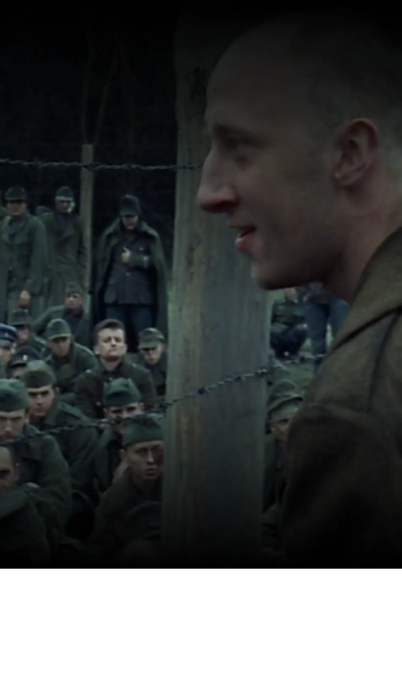

A simple yet profound sentence that sums up the film: survival through music in the face of Nazi barbarism. Find out
more about this powerful phrase.

The line from the film: "You took my violin, you took my soul".
One of the most memorable scenes in The Pianist is the one in which, at the end of the film, a Pole exclaims to a group
of imprisoned Nazi soldiers
Nazi soldiers: "You've taken everything from me. Me, a musician. You've taken my violin, you've
taken my soul". This phrase, rich in meaning and value, illustrates the importance of music for human beings.
"scene of the polishman looking for the pianist" excerpt from the film
Music as a vector of humanizing value
In another scene, Szpilman, the film's main character, plays the piano in an abandoned house where he
where he is hiding. He is discovered by a German officer, Wilm Hosenfeld, who asks him to play for him. Szpilman
performs Chopin's Nocturne n°20 in C sharp minor, a melancholy and poignant piece. Hosenfeld, touched by
the pianist's talent, decided to help him survive by bringing him food and finding him another shelter.
another shelter. I don't know how to thank you", he says. Szpilman replies, "Thank you.
"scene of the Pole pitying the Pianist thanks to the music" excerpt from the film
This scene shows how music can create a bond between two human beings who, at first glance, seem to have nothing in
common.
but who, in the end, remain sensitive to certain things, and are capable of empathy and generosity. For
find out more about the film's music, click here